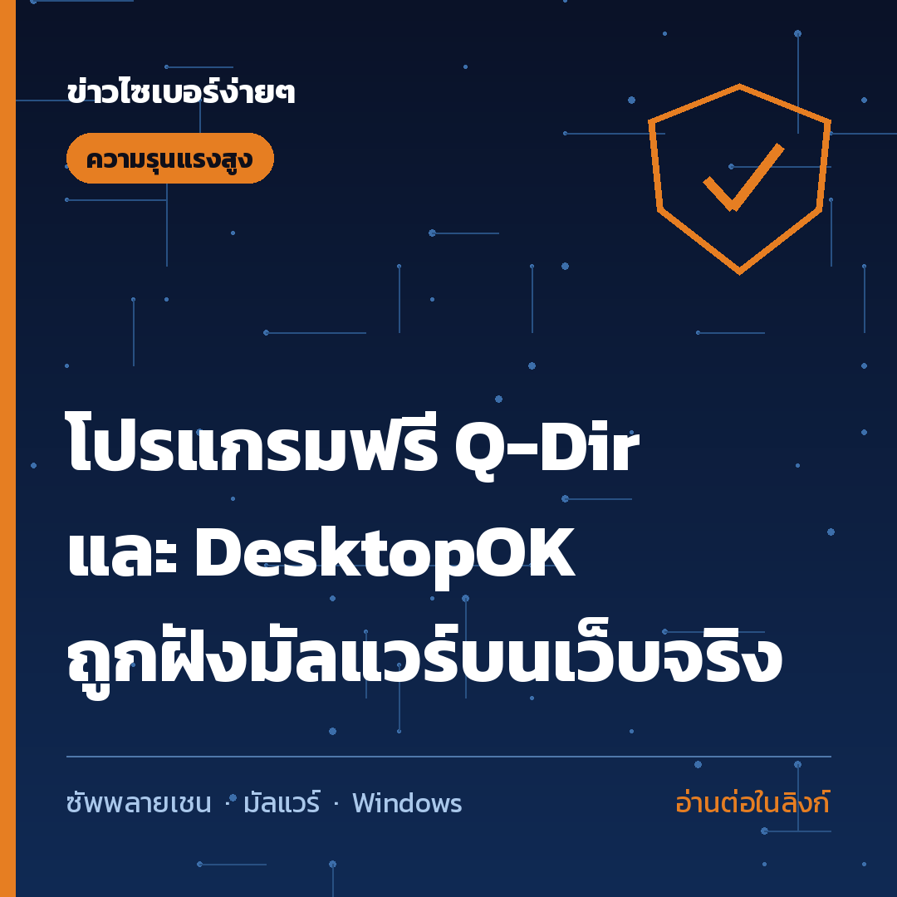

เว็บทางการ SoftwareOK ถูกแฝงมัลแวร์ในตัวติดตั้ง Q-Dir และ DesktopOK
สรุปสั้นๆ
ไฟล์ติดตั้งโปรแกรมฟรียอดนิยม Q-Dir และ DesktopOK บนเว็บไซต์ทางการของ SoftwareOK ถูกสับเปลี่ยนเป็นเวอร์ชันที่มีมัลแวร์ควบคุมเครื่องระยะไกล (RAT) ซ่อนอยู่ ทั้งคนที่ดาวน์โหลดใหม่และคนที่กดอัปเดตโปรแกรมเดิมอาจโดนด้วย

📰 เกิดอะไรขึ้น
นักวิจัยจาก AhnLab บริษัทความปลอดภัยของเกาหลีใต้ พบว่าไฟล์ติดตั้งของ Q-Dir (โปรแกรมจัดการไฟล์แบบหลายหน้าต่าง) และ DesktopOK (โปรแกรมจำตำแหน่งไอคอนบนเดสก์ท็อป) ที่แจกบนเว็บไซต์ทางการของ SoftwareOK ถูกแก้ไขโดยคนร้าย
เวอร์ชันที่ยืนยันแล้วว่าถูกฝังมัลแวร์ คือ Q-Dir 12.85.0.0, 12.84.0.0, 12.83.0.0 และ DesktopOK 12.85.0.0, 12.82.0.0 ไฟล์อันตรายถูกส่งมาทั้งตอนดาวน์โหลดจากหน้าเว็บโดยตรง และตอนที่โปรแกรมเดิมในเครื่องอัปเดตตัวเอง
ตัวติดตั้งปลอมจะเปิดโปรแกรมจริงขึ้นมาให้ดูเหมือนปกติ แต่เบื้องหลังจะแอบดาวน์โหลดเครื่องมือ 7-Zip และแพ็กเกจมัลแวร์ที่เขียนด้วย Python มาติดตั้ง จากนั้นสร้าง Scheduled Task ที่ปลอมชื่อเป็น Microsoft Edge เพื่อให้มัลแวร์ทำงานทุกครั้งโดยไม่มีใครสังเกต
มัลแวร์ตัวนี้ให้คนร้ายสั่งรันคำสั่งบนเครื่อง รันโค้ด Python รับส่งไฟล์ จับภาพหน้าจอ และเก็บข้อมูลระบบได้ นอกจากนี้ยังตรวจว่าเครื่องติดตั้งโปรแกรมป้องกันไวรัสยี่ห้อใดบ้าง แล้วส่งข้อมูลกลับไปให้คนร้ายวางแผนโจมตีขั้นต่อไป ยังไม่ทราบว่าคนร้ายเข้าไปเปลี่ยนไฟล์บนเว็บได้อย่างไร
🔎 ข้อมูลเพิ่มเติมจากแหล่งอื่น
รายงานต้นฉบับของ AhnLab (ASEC) ระบุว่า Scheduled Task ที่มัลแวร์สร้างมีชื่อ "\UPnp\MicrosoftEdge_dcntel" และมัลแวร์เทียบรายชื่อโปรเซสในเครื่องกับรายชื่อโปรแกรมด้านความปลอดภัยถึง 1,206 รายการ
AhnLab เผยแพร่ค่า SHA-256 ของไฟล์ติดตั้งของจริง 5 ค่า และของไฟล์อันตราย 17 ค่า ให้ผู้ใช้นำไปเทียบได้ พร้อมเตือนว่าผู้ที่ติดตั้งหรืออัปเดตเวอร์ชันอื่นในช่วงเวลาเดียวกันก็ควรตรวจสอบด้วย ส่วนไฟล์โปรแกรมจริงที่อยู่ข้างในยังมีลายเซ็นดิจิทัลที่ถูกต้องของผู้พัฒนา จึงดูน่าเชื่อถือมากขึ้น
AhnLab พบคอมเมนต์ภาษาจีนในซอร์สโค้ดของมัลแวร์ แต่ยังไม่ได้ระบุว่าเป็นฝีมือกลุ่มใด
👥 ใครได้รับผลกระทบ
- ผู้ใช้ Windows ที่ดาวน์โหลดหรืออัปเดต Q-Dir หรือ DesktopOK ในช่วงที่ผ่านมา
- โดยเฉพาะเวอร์ชัน Q-Dir 12.83–12.85 และ DesktopOK 12.82, 12.85
- องค์กรที่ให้พนักงานติดตั้งโปรแกรมฟรีเหล่านี้ใช้เอง
✅ ควรทำอย่างไร
- ถ้าเพิ่งติดตั้งหรืออัปเดต Q-Dir/DesktopOK ให้ตรวจค่า SHA-256 ของไฟล์เทียบกับรายการในรายงานของ AhnLab
- การถอนแล้วติดตั้งใหม่อย่างเดียวอาจไม่พอ ให้ตรวจหา Python ที่ไม่รู้ที่มา, Scheduled Task แปลก ๆ (โดยเฉพาะชื่อคล้าย MicrosoftEdge_dcntel) และการเชื่อมต่อออกไปยัง mail.c1a2[.]top หรือ 8.210.69[.]51
- อัปเดตโปรแกรมป้องกันไวรัสให้ล่าสุด แล้วสแกนทั้งเครื่อง หากพบว่าติดมัลแวร์ให้แยกเครื่องออกจากเครือข่ายและเปลี่ยนรหัสผ่านสำคัญจากเครื่องอื่น
- ฝ่ายไอทีควรบล็อกโดเมนและ IP ข้างต้นที่ไฟร์วอลล์ และจำกัดการติดตั้งโปรแกรมฟรีที่ไม่ผ่านการอนุมัติ
📖 คำศัพท์น่ารู้
- Supply chain attack
- การโจมตีผ่านช่องทางที่เราไว้ใจ เช่น แอบใส่มัลแวร์ในไฟล์ของผู้พัฒนาจริง ผู้ใช้จึงไม่ทันระวัง
- RAT
- Remote Access Trojan มัลแวร์ที่ให้คนร้ายควบคุมคอมพิวเตอร์ของเหยื่อจากระยะไกล
- SHA-256
- ค่าลายนิ้วมือของไฟล์ ถ้าไฟล์ถูกแก้แม้นิดเดียว ค่านี้จะเปลี่ยนทันที
- Scheduled Task
- ระบบตั้งเวลาให้ Windows รันโปรแกรมอัตโนมัติ มัลแวร์มักใช้เพื่อเปิดตัวเองซ้ำ
แหล่งอ้างอิง
- Hackers Trojanize Official Q-Dir and DesktopOK Downloads to Deliver Remote Access Malware The Hacker News (ข่าวต้นฉบับ)
- Software Supply Chain Attack via the Official SoftwareOK Website: Tampering with Q-Dir and DesktopOK Installation Files - ASEC asec.ahnlab.com
- Software Supply Chain Attack via Official SoftwareOK Website: Trojanized Q-Dir and DesktopOK Installers Deliver Python RAT - Threadlinqs intel.threadlinqs.com
บทความนี้เรียบเรียงเป็นภาษาไทยโดยใช้ AI ช่วยจากแหล่งข่าวด้านบน โปรดตรวจสอบรายละเอียดจากแหล่งอ้างอิงก่อนนำไปใช้